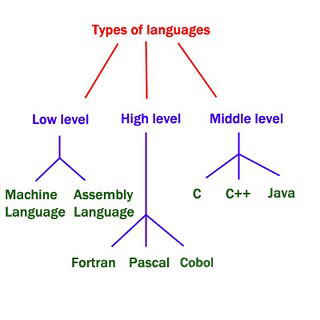

programming languages
links:
- main page
- introduction to programming languages
- types of programming languages
- programming languages ranking
- programming languages curves
programming languages types

- Machine languages
A machisne language consists of the numeric codes for the operations that a particular computer can execute directly . The codes are strings of 0s and 1s , or binary digits ("bits") , which are frequently converted both from and to hexadecimal ( base 16 ) for human viewing and modification . Machine language instruction typically use some bits to represent operations , such as addition and some to represent operands , or perhaps the location of the next instruction .
- Assembly languages
Assembly language is one level above machine language . It uses short mnemonic codes for instruction and allows the programmer to introduce names for blocks of memory that hold date . One might thus write " add pay , total " instead of " 0110101100101000"for an instruction that adds two numbers .
- Fortran
The first important algorithmic language was FORTRAN (formula translation), designed in 1957 by an IBM team led by John Backus. It was intended for scientific computations with real numbers and collections of them organized as one- or multidimensional arrays. Its control structures included conditional IF statements, repetitive loops (so-called DO loops), and a GOTO statement that allowed nonsequential execution of program code. FORTRAN made it convenient to have subprograms for common mathematical operations, and built libraries of them.
FORTRAN was also designed to translate into efficient machine language. It was immediately successful and continues to evolve.
- pascal
About 1970 Niklaus Wirth of Switzerland designed Pascal to teach structured programming, which emphasized the orderly use of conditional and loop control structures without GOTO statements. Although Pascal resembled ALGOL in notation, it provided the ability to define data types with which to organize complex information, a feature beyond the capabilities of ALGOL as well as FORTRAN and COBOL. User-defined data types allowed the programmer to introduce names for complex data, which the language translator could then check for correct usage before running a program .
- Cobal
COBOL (common business oriented language) has been heavily used by businesses since its inception in 1959. A committee of computer manufacturers and users and U.S. government organizations established CODASYL (Committee on Data Systems and Languages) to develop and oversee the language standard in order to ensure its portability across diverse systems.
- C
The C programming language was developed in 1972 by Dennis Ritchie and Brian Kernighan at the AT&T Corporation for programming computer operating systems. Its capacity to structure data and programs through the composition of smaller units is comparable to that of ALGOL. It uses a compact notation and provides the programmer with the ability to operate with the addresses of data as well as with their values. This ability is important in systems programming, and C shares with assembly language the power to exploit all the features of a computer’s internal architecture. C, along with its descendant C++, remains one of the most common languages.
- C++
The C++ language, developed by Bjarne Stroustrup at AT&T in the mid-1980s, extended C by adding objects to it while preserving the efficiency of C programs. It has been one of the most important languages for both education and industrial programming. Large parts of many operating systems, such as the Microsoft Corporation’s Windows 98, were written in C++.
- Jave
In the early 1990s, Java was designed by Sun Microsystems, Inc., as a programming language for the World Wide Web (WWW). Although it resembled C++ in appearance, it was fully object-oriented. In particular, Java dispensed with lower-level features, including the ability to manipulate data addresses, a capability that is neither desirable nor useful in programs for distributed systems. In order to be portable, Java programs are translated by a Java Virtual Machine specific to each computer platform, which then executes the Java program. In addition to adding interactive capabilities to the Internet through Web “applets,” Java has been widely used for
programming small and portable devices, such as mobile telephones.